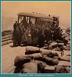
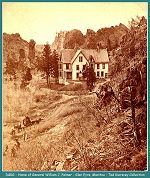

Early Images of Colorado Springs, Colorado

Pikes Peak
1890
(Image 00372) (153k)

Home of General William J. Palmer
'Glen Eyre'
located in Manitou, Colorado
(Image 00210) (188k)
This Web page is written, maintained,and hosted by:
Mark L. Evans
Send Comments to:
Mark L. Evans